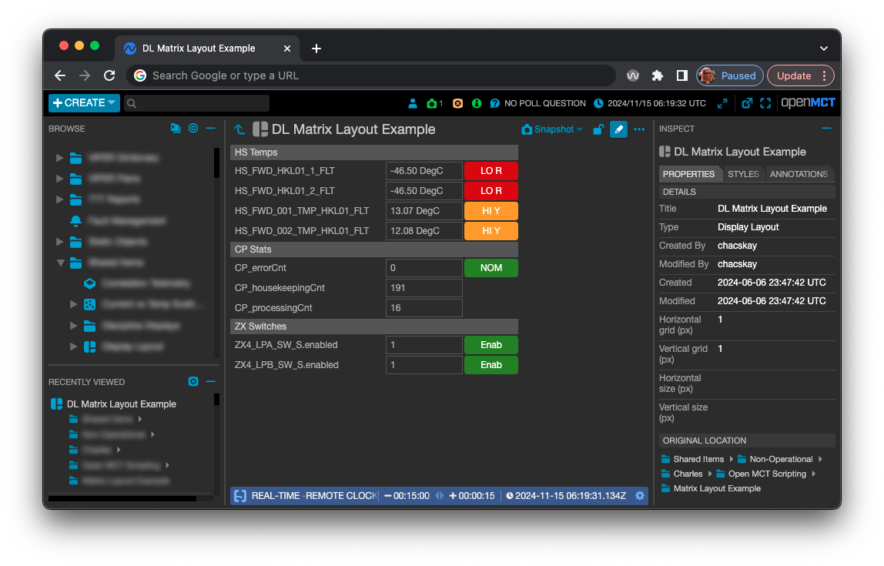
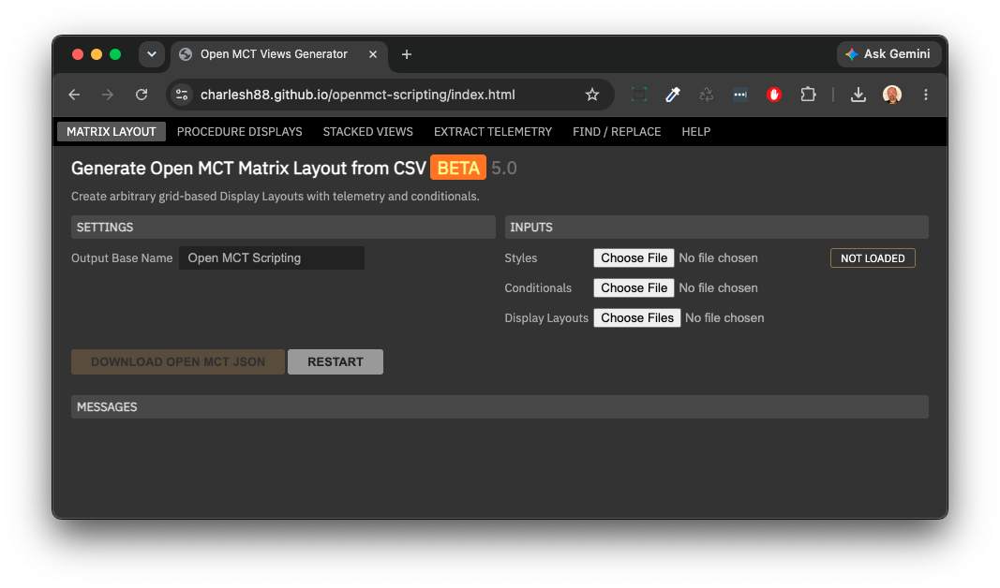
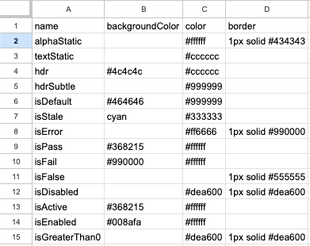
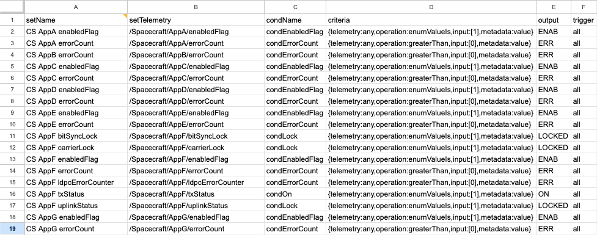
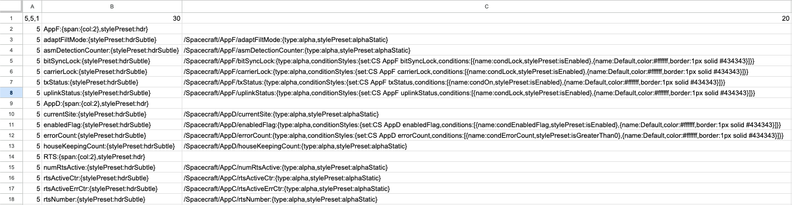
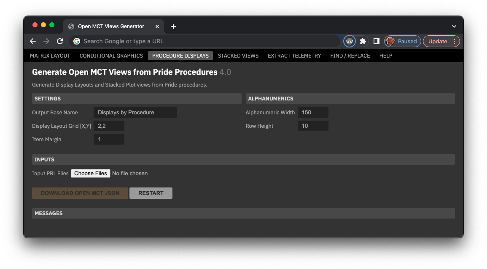
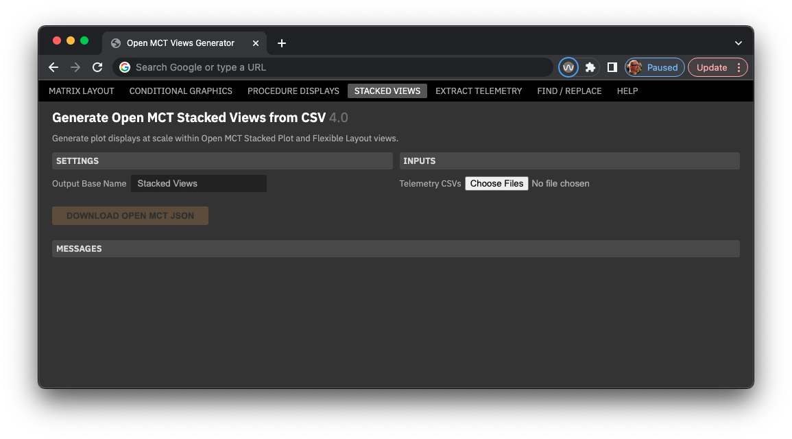
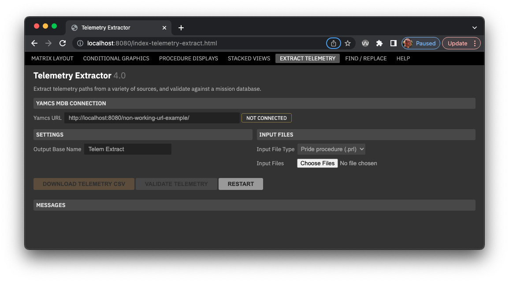
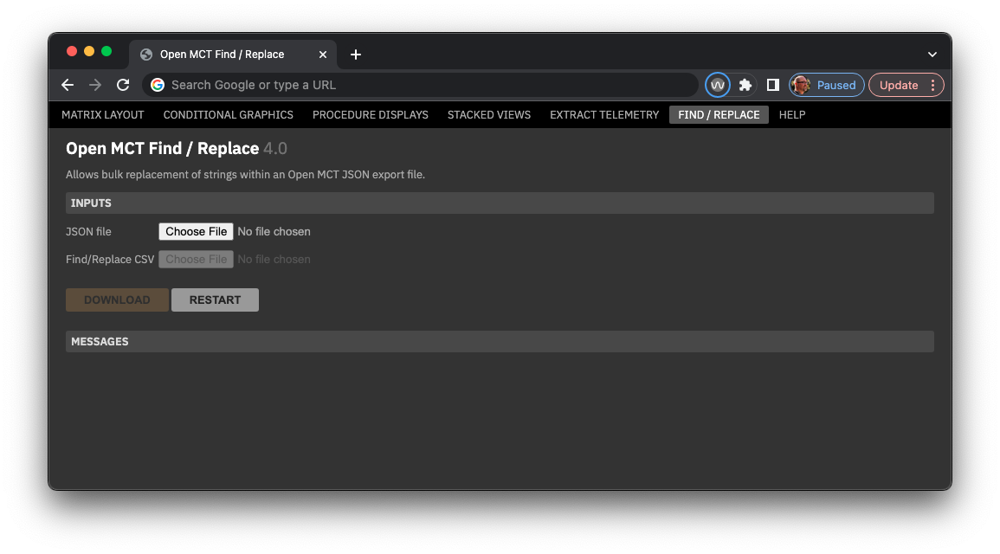
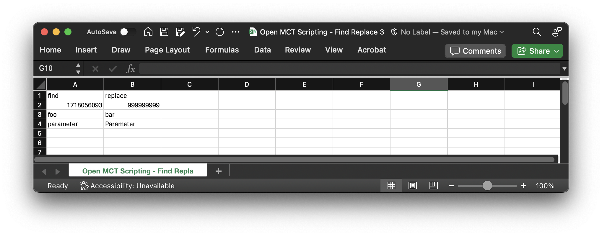

Last updated: 29 June 2026
Contents
Overview
Allows large scale creation of a variety of Open MCT views, many with integrated Conditional styling.
Source files include tabular CSV, PRIDE .prl files, and Python ground control scripts (GCS). The tool
outputs JSON files that are imported into Open MCT.
- Create and/or gather input files.
- Run those inputs through this tool, which then outputs an Open MCT import-ready JSON file.
- Import that JSON file into Open MCT in the environment and location desired.
The tool also provides a capability to extract telemetry paths from GCS scripts and PRIDE PRL files into
a CSV output.
Links
Matrix Layout Beta

What It Does
- Uses input CSV files, one that defines conditionals and others for Display Layouts; one or more
Display Layouts are created as a result.
- Multiple Condition Sets can be created in a single file with unlimited Conditions;
Conditions can include unlimited criteria.
- The matrix layout file(s) define a grid with variable column widths and row heights and can
display alphanumerics, Condition Widgets and text objects. All conditionals used in the layout files must be present in the Conditionals CSV file.
- Named style "presets" can be defined and imported in a style presets CSV file. Style presets can be referred to and used in a Display Layout file, or styles can be defined and applied directly.
- Elements can be statically and/or conditionally styled.
- A LAD Table for each Display Layout file that contains the telemetry parameters used in that layout.
- Folders that contain the above elements.
Interface

- Output Base Name: defines the base of names used to define output JSON files.
- Styles: optional CSV files that defines named styles (border, foreground color, background color) that can be referenced from conditional declarations and Display Layout elements.
- Conditionals: a CSV file that defines Condition Sets and their conditions. Not required if the Layout file isn't using conditionals.
- Display Layouts: a CSV file that defines an Open MCT Display Layout in a rows and columns grid format.
Styles CSV Input File
Defines named styles to be used in the matrix Display Layout. Download example CSV file.

All columns are optional, but a value in at least one column is required.
| Column |
Description |
Example |
| name |
Unique name of this preset. Space or slash characters not allowed. |
alphaStatic, isEnabled, isError |
| backgroundColor |
A full and valid hex color specification for the background of an element. |
#ffffff, #ffcc00, #006600 |
| color |
A full and valid hex color specification for the text color of an element. |
#ffffff, #ffcc00, #006600 |
| border |
A valid CSS border expression with border-width, border-style and color properties. |
1px solid #990000, 1px solid transparent, 3px dashed #006600 |
Conditionals CSV Input File
Defines Condition Sets to be used in the matrix Display Layout. Download example CSV file.

| Column |
Description |
Example |
| setName |
Name of a Condition Set. The name only needs to be defined once; following rows of conditions will be added to the last defined Condition Set. |
|
| setTelemetry |
A full path to one or more telemetry parameters, separated by commas.
|
/Spacesystem/subsystem/parameter1,/Spacesystem/subsystem/parameter2 |
| condName |
Name of this Condition. Names must be unique in a given Condition Set, but can be duplicated across multiple sets.
|
|
| criteria |
One or more criteria definitions, in a JSON-like `{property: value}` format. See "Condition Criteria Arguments" below. |
{telemetry:any,operation:enumValueIs,input:[0],metadata:value} |
| output |
A string, or boolean TRUE or FALSE that will be output by this condition when it is matched. |
ENAB, Enabled, TRUE |
| trigger |
How telemetry values are evaluated in this condition. Values:
- any: If any telemetry value meets this condition's criteria, then the condition matches.
- all: All telemetry values must meet this condition's criteria for the condition to match.
- not: This condition only matches when no telemetry values can meet this condition's criteria.
- xor: Only one telemetry value can meet this condition's criteria for the condition to match.
|
|
| isDefault |
Boolean TRUE, FALSE or blank. Defaults to FALSE if left blank.
|
|
Conditions allow any number of criteria to be defined per condition. Arguments are defined in a JSON-like string format, in this form: {
property:value,property:value,etc. } Note that both property names and values don't use
quotes around them.
| Argument Property |
Description |
Example |
| telemetry |
any, all or a full path to a specific telemetry point |
{telemetry:all}
{telemetry: /Spacecraft/subsystem/paramter1} |
| operation |
One entry from the set of available Operations; see "Condition Operation and Inputs"
below for details.
|
{operation:greaterThan}
{operation:textContains} |
| input |
Inputs appropriate for the chosen operation. Values here must be enclosed in square brackets [
], even when the input is a string. See "Condition Operation and Inputs" below for
details.
|
{input:[-10,10]}
{input:[foo]} |
| metadata |
'value' when evaluating any telemetry values, 'dataReceived' when operation is ifDefined, isUndefined, etc. See "Condition Operation and Inputs" below for details. |
{backgroundColor:#660000} |
Condition Operations and Inputs
| Telemetry Type |
Operation |
Description |
Condition operation literals |
Comparison input format |
Example |
Notes |
| All |
Is Defined |
Matches if the telemetry endpoint is present and available from Yamcs, even when it doesn't
have a value.
|
isDefined, isUndefined |
N/A |
{telemetry:any,operation:isUndefined} |
|
| All |
Data older than |
Allows a user-defined "staleness" interval to be applied to a parameter. |
isStale |
Number of milliseconds |
{telemetry:any,operation:isStale,input:[1500]}
|
|
| Float |
Equality |
Compares a current telemetry value to the input with equality. |
equalTo |
Single number |
{telemetry:any,operation:equalTo,input:[1]} |
Note that Float and Integer telemetry types and comparisons are not compatible, i.e. a telem
value of 0.000 will not match a comparison value of 0. Use Greater/less than comparisons in
these cases.
|
| Float |
Greater/less than |
|
greaterThan, lessThan, greaterThanOrEq, lessThanOrEq |
Single number |
{telemetry:any,operation:greaterThan,input:[0]} |
|
| Float |
Between |
|
between, notBetween |
Two numbers separated by a comma |
{telemetry:any,operation:between,input:[-100,100]} |
Values match between the defined range ends, not inclusive of them. For example, a
current value of -100 will not match a between condition of [-100,100].
|
| Enumeration |
Enum value equality |
|
enumValueIs, enumValueIsNot |
Raw numeric of the enumeration, not the enumeration string |
{telemetry:any,operation:enumValueIs,input:[2]} |
|
| String |
Contains |
|
textContains, textDoesNotContain |
Text |
{telemetry:any,operation:textContains,input:[oob]} |
|
| String |
Starts/Ends |
|
textStartsWith, textEndsWith, |
Text |
{telemetry:any,operation:textStartsWith,input:[Foo]} |
|
| String |
Equality |
|
textIsExactly |
Text |
{telemetry:any,operation:textIsExactly,input:[Foobar]} |
|
Display Layouts CSV Input File
The Display Layouts CSV file defines a grid with variable column widths and row heights. Download example CSV file.

- Row 1 defines the width of columns in the grid, in layout grid units.
- Column A defines the height of each row in the grid, in layout grid units.
- Cell A1 contains 3 comma-separated values that control the grid dimensions and item margin:
- The first two values are the desired layout grid dimensions, which are the basis for grid
units.
- The last value is the amount of margin between columns and rows, in grid units.
- For example, "1, 1, 4" will create a Display Layout with settings of grid X = 1,
grid Y = 1, and 4 "grid units" of margin between columns and rows.
- If values are not provided in A1, the tool will use the default settings of 1, 1, 4.
- Cells can contain text, or a path to a telemetry parameter.
- Text cells can contain optional "flags"; see below for more.
- Cells that start with "/" or "~" will be treated as parameter paths.
- You can use "/" or "~" characters as text, but only if they are escaped.
See "Escaping Text" above.
- Your telemetry file can include parameters that are not used by the layout file, but the converse is
not true: parameters used in this file MUST be present in the telemetry CSV file used for a given
matrix layout.
Using Optional Flags in the Layout CSV File
Both text and telemetry parameters accept certain "flag" arguments that allow additional
capabilities and rendering options. More than one flag can be used at a time, separated with commas.
Flags include:
| Capability |
Flag |
Telemetry |
Text |
Example |
Notes |
| Span multiple columns |
span:{ col:#,row:# } |
YES |
YES |
FOO:{span:{col:3,row:2} } |
A text element with "FOO" will span across 3 columns and 2 rows,
starting at and inclusive of the element's current column and row.
|
| Type |
type: type |
YES |
YES |
FOO:{type:condition-widget}
|
`type` can be 'alpha' | 'condition-widget'| 'link' (not yet supported)
|
| Options |
options:{ property:value, property,value } |
YES |
YES |
FOO:{type:condition-widget,options:{format:%.2f}}
FOO:{type:condition-widget,options:{url:https://www.nasa.gov,useCondOutput:true}}
|
A string of comma separated "property: value" pairs. |
| Style |
style:{ property:value, property,value } |
YES |
YES |
FOO:{type:condition-widget,options:{url:https://www.nasa.gov},style:{backgroundColor:#666666,color:#ffffff}}
|
A string of comma separated "property: value" pairs. |
| Style Preset |
stylePreset:preset name |
YES |
YES |
FOO:{stylePreset:alphaStatic}
FOO:{stylePreset:hdr} |
'stylePreset' with the name of a defined preset style. |
| Conditionals |
conditionStyles:{ set:set name, conditions:[{ name: name, style property:value }]} |
YES |
YES |
FOO:{type:condition-widget,conditionStyles:{set:CS CCU,conditions:[{name:c0,backgroundColor:#368215,color:#ffffff},{name:c1,color:#368215,border:1px solid #368215},{name:c2,backgroundColor:#660000,color:#ffffff},{name:Default,border:1px solid #555555}]}}
|
A string of comma separated "property: value" pairs. |
Procedure Displays
What It Does
- Traverses multiple PRIDE procedure .prl files and creates Display Layout of alphanumeric parameter
values and Stacked Plots for each.
- Parameters are grouped into their steps and labeled as such.
- Each parameter is included as an alphanumeric with a label derived from the procedure
file.
- Widths of alphanumerics can be directly set; the width of labels is automatically
calculated.
- IMPORTANT NOTE: only fully qualified paths (e.g. '/SpacecraftSystem/Subsystem/etc.')
in procedures can be found and extracted; references without in descriptive text may not be
found.
- A Tabs View that contains all the generated Display Layouts.
- A Stacked Plot per procedure with parameters used.
- Folders that contain the above elements.
Interface

- Output Base Name: defines the base of names used to define output JSON files.
- Display Layout Grid: the X and Y grid dimensions to be used by generated Display
Layouts.
- Settings here are per pixel and define the scale of item widths and heights specified
elsewhere. For example, using a grid of 2,2 would create a 2 x 2 grid in the layout. Items
set to 200 width and 14 high would then be 400 pixels wide by 28 pixels high.
- Using smaller numbers here mean that items can be more tightly packed. Using a grid of 1,1
would make the grid equivalent to pixels.
- Item Margin: a single grid unit number that controls the amount of horizontal and
vertical space between items in the Display Layout. Using "1" with grid set to 2,2 would
create a 2 x 2 pixel space between labels and elements.
- Alphanumeric Width: controls the width of alphanumeric elements in the layout.
- Row Height: controls the height of text-plus-alphanumeric pairs in the layout.
Stacked Views
What It Does
- Takes in multiple telemetry source files and creates both a Stacked Plot and a Flexible Layout for
each.
- The source file can group telemetry parameters into Overlay Plots, which become elements within the
Stacked Plots and Flexible Layouts.
- Overlay Plots of the same name will be created once, and shared amongst multiple Stacked
Plots and Flexible Layouts.
- Telemetry parameters can specify some properties like the display of limit lines, marker
size and shape, and line interpolation style.
- Folders that contain the above elements.
Interface

- Output Base Name: defines the base of names used to define output JSON files.
Example Source
What It Does
- Takes in multiple source files and creates CSV file outputs that list parameters, their usage and
optionally if they validated against a Yamcs database.
- Allows validation of extracted parameters if a valid Yamcs web api server connection is available.
- IMPORTANT NOTE: only fully qualified paths (e.g. '/SpacecraftSystem/Subsystem/etc.')
in PRIDE procedure files can be found and extracted; references without in descriptive text may not
be found.
Interface

- Yamcs URL allows the entry of a valid "Get Parameter" Yamcs
web api URL to allow validation of extracted telemetry parameters against the mission database.
When a valid URL is entered and a good connection to a Yamcs is available, the indicator to the
right of the input will display "Connected", and the "Validate Telemetry" button
will be enabled once telemetry has been extracted. A Yamcs connection is not required in order to
extract telemetry, only to validate it.
- Output Base Name: defines the base of names used to define output JSON files.
- Input File Type: choose either GCS Python scripts (.py) or PRIDE procedure (.prl).
- Choose Files allows you to select one or more of .prl or .py files to use.
- Download Telemetry CSV downloads the resulting output CSV.
- Validate Telemetry If a valid Yamcs URL is entered and the connection is good, this
button will enable after files have been selected. Click again to validate extracted parameters.
Find / Replace
What It Does
- Allows bulk find and replace of strings in any valid text file, such as .txt, .json, .js, .py, etc.
Takes in a single source file and a CVS table file of search / replace pairs.
Interface

- Source file uploads a source text file.
- Find/Replace CSV uploads a two-column CSV file of values to search for and replace
in the source file.
- Download the resulting replaced text as a file.
Find / Replace CSV input file

- The file must have a header row, but the names of the columns are not important.
- Values in the first column will be searched for in the source file and replaced with those in the
second column, same row.